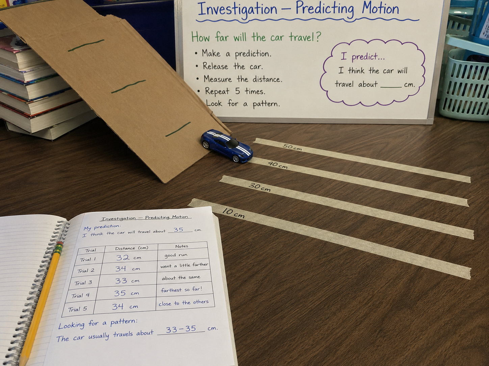

Keep that question in your mind as you work through the investigation today.
Look at the photo below. Someone set up an investigation with a ramp, a car, and some tape marks on the floor. They haven't started yet.
There's no wrong answer here. Just look carefully and write what you actually see and think.
Copywork: Copy this sentence carefully into your science notebook:
"When scientists repeat an investigation many times, they can find patterns and make better predictions."

When scientists test how something moves, they don't just do it once. They repeat the test again and again. Each test is called a trialtrialOne test during an investigation..
Running multiple trials matters. If you only roll the car once, you can't tell if that result was typical — or just luck.
After several trials, scientists look at their datadataMeasurements and observations recorded during an investigation.. They ask: did something similar happen each time?
If the car traveled close to the same distance every trial, that's a patternpatternSomething that repeats in a predictable way.. Patterns are clues. They tell you that something reliable is happening — not just chance.
Once you find a pattern, you can make a predictionpredictTo say what you think will happen next, based on evidence.. A prediction isn't just a guess. It's an idea based on evidenceevidenceObservations or measurements that support an idea..
If your car has traveled about 33 cm in five trials, you can predict the next trial will land close to that. That's exactly how scientists think — and it works.
Real-World Connection: Scientists use patterns in motion to predict where objects will move — from baseballs to spacecraft traveling billions of miles through space.
When an object moves in a predictable pattern, you can use that pattern to predict future motion. The more trials you run, the more confident you can be in your prediction.
Patterns in data are evidence. And evidence is what separates a prediction from a guess.
Curious? Go Deeper
A pendulum is one of the most perfectly predictable objects in science. Tie a rock to a string and swing it. Every single swing takes almost exactly the same amount of time — no matter how hard you push. Scientists call that a "constant period."
Galileo figured this out in the 1500s — supposedly by watching a chandelier swing in a church. He used his own pulse as a timer. Even without modern tools, he noticed the pattern and measured it. That's the same thing you're doing today with your ramp and car.
What other moving things do you think have a predictable pattern?
You'll need: a cardboard ramp propped on 2–3 books, a small toy car or smooth round object, a ruler or measuring tape, masking tape (for floor marks), and your science notebook.
Follow each step carefully and record your observations as you go.
Make a Prediction: Before you touch the car, open your notebook. Write: "I think the car will travel about ___ cm." Write a real number — your best guess based on the diagram and photo you've seen.
Set Up the Ramp: Prop one end of the cardboard on a stack of 2–3 books. Place your measuring tape along the floor starting from the bottom of the ramp. Put tape marks at 10, 30, 40, and 50 cm. Keep the ramp in the same position for every trial.
Run 5 Trials: Release the car from the same spot at the top of the ramp. Don't push — just let go. Record how far it travels in your data table. Repeat 4 more times. In your Notes column, write one word about each trial (for example: "good run" or "bumped the side").
Find Your Pattern: Look at your 5 distances. Are they close to each other? Find your lowest and highest number. Write: "The car usually travels about ___ to ___ cm." That range is your pattern.
Make a New Prediction: Based on your data, write a new prediction for Trial 6. Then run one more trial. How close were you? Write down what happened.
In your science notebook, make sure you have recorded everything below. Being specific matters — write exactly what you saw, not just "it worked."
Tell the story of your investigation from beginning to end — what you did, what you noticed, and what surprised you. Use your data table to help you remember the details.
Think through each question on your own. Write your answers in your science notebook before moving on.
🔍 Part A — Label the Data Table
Use the word bank to label each part of a data table: trial, distance (cm), notes, range, pattern.
🚀 Part B — Short Answer
Answer each question in complete sentences. Use your science vocabulary!
Use your investigation data to answer: How did patterns in your data help you make a prediction?
What did you observe?
💡 Start with: "During my investigation, I noticed that…"
What does that tell you?
💡 Start with: "This pattern tells me that…"
Why does that make sense?
💡 Start with: "This makes sense because the evidence shows…"
📚 Try to use at least two of these words in your answer: trial, pattern, evidence, predict, data
🎨 Part C — Draw & Label
Draw the ramp investigation setup from a side view. Label at least 4 parts: the ramp, the release point, the flat surface, the measurement tape. Add an arrow showing the direction of the car's motion.
Submit your work on Canvas using one of these options:
Make sure your submission includes all of these: